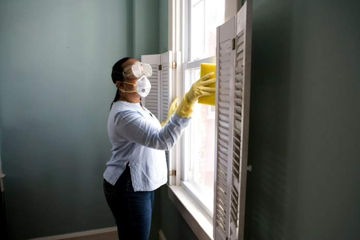

Quote forms you can finish one-handed
Name, suburb, phone, what needs doing, and a photo if they have one. Short enough to complete standing in a driveway on a cracked screen in daylight.
It is ten past six. You have finished on site at Blacktown, you are sitting in the ute, and an enquiry lands on your phone. You want the suburb, the job and a number you can tap with one thumb. If the email is a wall of text, or the site took eight seconds to load before they gave up on it, that lead waits until tomorrow. By then somebody else has rung them back.
Onva Labs does tradie website design and website development for construction companies across Sydney, and we build around that moment. Quote request forms short enough to finish at a traffic light. Service-area pages for the suburbs you genuinely travel to. Galleries of finished work that load on mobile data. A Google Business Profile that matches the site. Your contractor licence number where customers look for it, and reviews kept genuine.
Six things that decide whether a tradie website brings in jobs or just sits there looking tidy, based on how customers search and how you read the result between jobs.
Name, suburb, phone, what needs doing, and a photo if they have one. Short enough to complete standing in a driveway on a cracked screen in daylight.

A page for each suburb you actually work in, with the trades you do there, rather than a list of every postcode in Sydney that fools nobody and ranks for nothing.
Before and after photos compressed properly so they load on mobile data, grouped by job type, so a customer can see work like theirs before ringing you.

Name, address, phone, hours and service areas identical on the site and the profile, because inconsistent details are what quietly sink local search for trades.
Your contractor licence number, insurance details and the trades it covers, displayed where customers look, because that is the first thing a careful homeowner checks.
We make it easy for real customers to leave reviews and we show them on the site. We do not write, buy or edit them, and we explain why that matters.
We build to the Core Web Vitals thresholds that matter on a phone in the field: LCP under 2.5 seconds, INP under 200 milliseconds and CLS under 0.1, measured on the pages customers land on.
Local SEO for trades is most of the job. Suburb pages, consistent business details, your Google Business Profile, and schema.org structured data describing your trade and the areas you cover.
Enquiry emails are written for a phone, not a desktop inbox. Suburb and job type in the subject line, the customer's number on the first line, photos attached rather than hidden behind a link.
We will not invent reviews, awards or numbers to fill a page. Australian Consumer Law covers misleading or deceptive claims, and a trade business that gets caught loses more than a ranking.
We go through the trades you do, the suburbs you travel to, and how you want leads to arrive.
Page structure, form fields and photo requirements agreed up front, so the site is written around real jobs.
Built, tested on a phone over mobile data, then switched across with redirects from the old site.
We watch which suburb pages bring enquiries and adjust, instead of leaving the site to go stale.
Most trades businesses want the enquiries to keep arriving once the site is live, so these are the pieces that tend to follow it.

Local search work on suburb pages, business details and the technical basics, so people searching for your trade nearby can find you.
View serviceIf you work Parramatta, Blacktown, Penrith and out west, this covers how we build for businesses in that part of Sydney.
View service
A clean, fast site without a content system you will never log into. Often right for a small crew or a new construction company.
View serviceLicensing and advertising requirements are set by your state regulator and depend on your trade, so confirm what applies to you. Separately, it is worth doing regardless. A homeowner comparing three quotes will go looking, and a visible licence number with the trades it covers removes one reason to ring somebody else instead.
We will not write them. Australian Consumer Law covers misleading or deceptive conduct, and fabricated reviews sit squarely inside that. What we will do is make leaving a genuine one easy: a short link sent after the job, a prompt on the invoice, and your Google Business Profile set up so reviews land where customers look.
Fewer than most people expect. A suburb page only works if there is something real on it: jobs you have done there, the trades you offer, how far you travel. Twelve honest suburb pages do more than sixty thin ones, and local SEO for trades tends to punish pages that exist only to repeat a postcode.
Tell us what you do and where you work. We will build a site that turns a phone search into an enquiry you can answer from the ute.